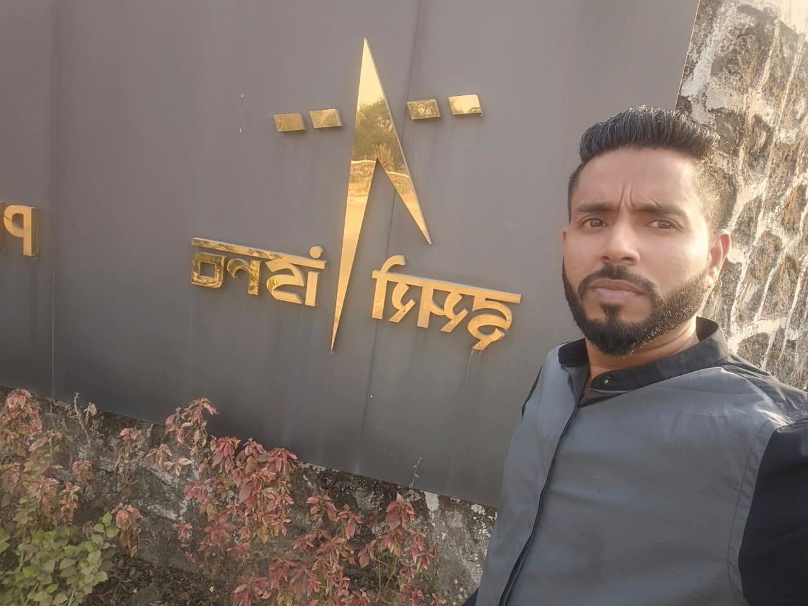

Fake ID and Documents



Jayesh Patil, Tanmay Mhatre, Aditya Mhatre – Fake Scientist & Officer Exploiting Women via Matrimonial Sites
आदर्श प्रशांत म्हात्रे हा महिलांची आर्थिक फसवणूक करणारा भामटा आहे, त्याने आजपर्यंत अनेक महिलांना फसवले आहे. लग्न जुळवणाऱ्या वेबसाईटवर स्वतःचे profile banvun जयेश पाटील, तन्मय म्हात्रे, आदित्य म्हात्रे, आणि नवहूश म्हात्रे - अश्या विविध खोट्या नावांनी बनवुन तरुणींना आर्थिक गंडा घालणाऱ्या या महाठकावर अशाच प्रकारचे अनेक वेगवेगळे गुन्हे मुंबई, नवी मुंबई, ठाणे, रायगड, पिंपरी आणि पुणे याठिकाणी दाखल आहेत.
आदर्श म्हात्रे हा मूळचा केगाव, उरण, रायगड येथील आहे. तो हाशिवारे, अलिबाग आणि भोपाळ येथे देखील राहिला आहे. पोलिस आणि कायद्या पासून वाचण्यासाठी तो सतत आपले location बदलत असतो. तो पुणे किंवा मुंबई येथे राहत असून, त्याचे नातेवाईक तुराडे, रसायनी आणि करंजडे, पनवेल येथे स्थायिक असलेल्या नातेवाईकांना भेटण्यासाठी येत असतो.
आदर्श म्हात्रे हा विवाहित आहे आणि त्याची पत्नी व मुलगा भोपाळ मध्ये राहतात. तो २०१९ पासून फसवणुकीचे धंदे करतो .अटक होऊनही तो bail मधून सुटून बाहेर आल्यावर असे फसवणुकीचे काम चालू ठेवतो .
आदर्श म्हात्रे हा ISRO Scientist, IAS अधिकारी, किंवा IPS अधिकारी, असल्याची fake identity cards आणि certificates वापरून Shaadi.com, Jeevansathi.com ,Divorcee.com अश्या matrimonial sites वर महिलांना भेटतो. मुख्यत: पुणे, मुंबई आणि ठाणे येथील working महिलांना आपल्या जाळ्यात अडकवतो. तो महागड्या गाड्यासमोर उभे राहून फोटो काढतो आणि Social media वर fake accounts काढून महिलांना impress करण्यासाठी त्याचा वापर करतो. एकदा का त्यांचा विश्वास मिळवला की, तो खोटे बोलून, वेगवेगळी कारणे देऊन, "मला पैशांची तात्काळ आवश्यकता आहे, काही दिवसांत परत करतो" असे सांगून त्यांच्याकडून मोठ्या प्रमाणावर पैसे उकळतो. तसेच,पैसे नसतील तर तो महिलांना instant loan घेण्यास देखील प्रवृत्त करतो. हा पैसे तो सट्टेबाजी करण्यासाठी आणि Goa येथे जाऊन मौजमजा करण्यासाठी वापरतो. नंतर तो contact तोडून नवीन शिकार शोधतो.
तो अशी कामे 2019 पासून करत असून अजूनही सक्रिय आहे.अहवालांनुसार त्याने ५० पेक्षा जास्त महिलांना फसवले आहे, प्रत्येकीकडून ₹५ लाख ते ₹३५ लाख पर्यंत पैसे उकळले आहेत. त्याच्याविरुद्ध फसवणूक आणि ठगबाजीचे अनेक गुन्हे दाखल आहेत. अटक होऊनही तो विविध नावांद्वारे आणि नवीन युक्त्या वापरून अजूनही लोकांना फसवतो.
If you have encountered this individual or fallen victim to his scams, please report it immediately to the Thane Crime Branch:
This page is dedicated to raising awareness about his fraudulent activities. Stay vigilant and do not fall for his scams!
Disclaimer: All information provided on this page has been sourced from publicly available news articles. This page is intended solely for raising awareness and educating individuals about fraudulent activities. The creators of this page do not intend to defame or harm anyone’s reputation. If you believe any information is inaccurate, please contact the relevant authorities or news outlets for clarification.